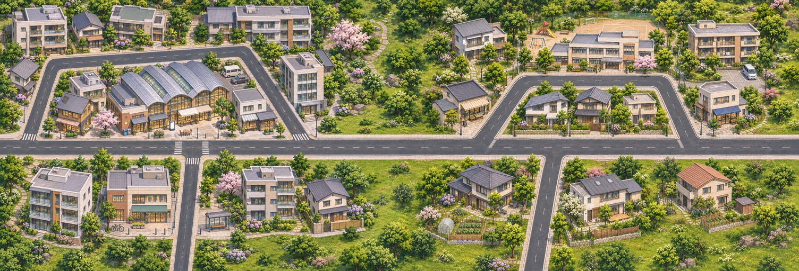
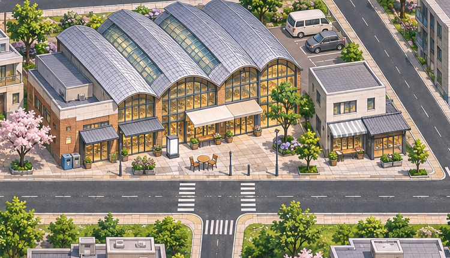
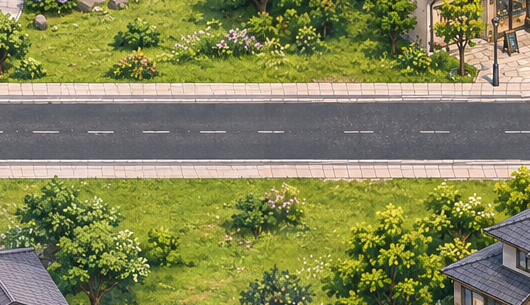
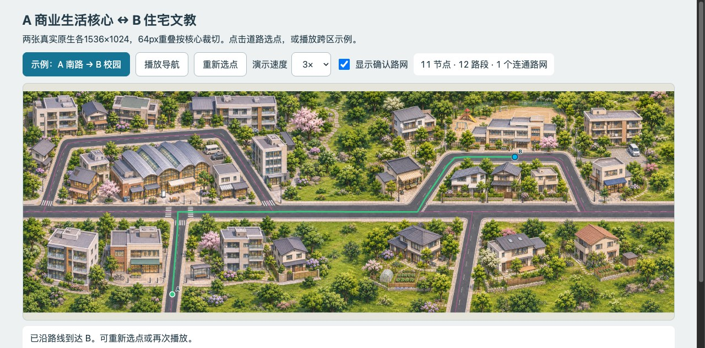

两张真实原生各1536×1024；各一次请求，核心与边带铺满场地，不是白底孤岛。当前只是两区候选，不是整城或用户验收。


750×430原像素裁片，无插值。少量窗色、细节和用户视觉认可仍待确认。

530×305原像素裁片。道路可见相连，路沿和草木纹理并非像素级无缝。

连续移动采样在browser-walkthrough.json，不由这一张到达截图推断整个过程。现有4186不覆盖新目录，已用无新端口的自含离线页运行。
整图里的单楼不可独立拖动；可编辑区域偏移、路线节点及独立对象层。Tiled后台画面重绘未核实，不能将旧窗口缓存当本两区显示证据。没有正式游戏测试或存档操作。